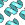

|
|
Main Window — Proteins Toolbar |
This toolbar provides access to tools for working with proteins.
| Quick Torsion Rotate part of a structure around a bond. Pick the bond in the Workspace, and drag with the left mouse button to adjust the torsional angle. |
|
 |
Sculpt Menu equivalent: Edit → Sculpting Mode. Perform "sculpting"—move the selected atoms and run a limited force-field minimization of a region around the moved atoms. The minimization is restarted each time you move an atom. See the Local Transformations topic for more information. |
| Protein Reports Opens the Protein Reports panel so you can view information about the protein structure. |
|
| Ramachandran Opens the Ramachandran Plot panel so you can view a Ramachandran plot of the protein dihedrals. |
|
|  | Crystal Mates View all or part of symmetry-related molecules that are within van der Waals contact of the asymmetric unit. If you click and hold, a menu is displayed, from which you can choose a distance from the displayed structure within which the crystal mates will be displayed. |
| Regularize Perform a short, force-field coordinate minimization for the selected residues. |
|
 |
Partial Occ Set the occupancies for the selected atoms in the Partial Occupancy dialog box . |
|